Feiyang(Vance) Chen
Feiyang(Vance) Chen Email: fychen [at] cs [dot] ucla [dot] edu Actively seeking full-time opportunities starting 2023! |
About me
I'm a final-year CS graduate student at UCLA, my academic advisor is Prof. Demetri Terzopoulos. My current research interest focuses on Multimodal Machine Learning and AI for Good. As the nature of human communication is Multimodal, I aspire to get computers to reach new heights in their understanding and applied AI for Good social impacts.
In my previous experiences, I have a diverse academic and industrial background, including Multimodal AI [0],[1],[2],[3],[4], Graph Neural Networks (GNNs) [5],[2],[6],[7], Model Compression & Efficient ML [5],[8],[9], Computer Vision [9],[10],[11], NLP [1],[3],[4], AI for Healthcare [2],[6],[7], Data Augmentation [9],[11], Large-Scale ML [5],[8], Auto ML [9], Speech & Audio [4], and solid software engineering experiences in algorithm design, data structures, problem-solving, and complexity. I’m also active in academics and have served as a reviewer for many top-tier AI/ML conferences, like ICLR, ICML, NeurIPS, etc.
I love open-source community and making contributions to the open-source world, like GitHub. In Gitstar Ranking, I rank Top 0.03% of all GitHub developers (more than 37,000,000) by GitHub stars. In CodersRank, I rank Top 3% of all 62k developers worldwide. Here is my Github Profile Trophy, I have 11 S (Super Stargazer) GitHub Star Trophies. I'd like to discover, share, and build better software for this world. I am the core member of some open-source organizations, such as The Algorithms, ApacheCN, and Doocs. I am also a student member at IEEE and ACM.
I have been pondering how machines can break out of their computational boundaries to understand human intelligence. My goal is to develop computationally efficient machine learning as well as deep learning models and algorithms, building the computational foundations to enable computers with the abilities to analyze, recognize and predict subtle human communicative behaviors during social interactions. My favorite quote: “The thing that’s worth doing is trying to improve our understanding of the world and gain a better appreciation of the universe and not to worry too much about there being no meaning.”
Research Interests
Multimodal Machine Learning: representation, alignment, translation, fusion, and co-learning of heterogeneous data
Applied Machine Learning: real-world applications in language, vision, speech, robotics, education, and self-driving
AI + X: AI for healthcare, finance, climate, agriculture, astronomy, art, and VR (Metaverse)
Feel free to contact me if you’d like to talk about any of the above research topics, I'm always open to collaborations!
Services
PC Member/Reviewer: ICLR 2023/2022/2021, ICML 2022, NeurIPS 2022/2021, ACL 2022/2021/2020, EMNLP 2022/2021/2020,
NAACL-HLT 2021, EACL 2021, AACL-IJCNLP 2022/2020, WACV 2020, ICMI 2021/2020/2019Core member of open-source organizations: The Algorithms, ApacheCN, Doocs
Experiences
Visiting Student Researcher, Salesforce Research, 2022
Machine Learning Intern, Coupang, Jun. 2022 – Sep. 2022
Machine Learning Intern, SenseTime Research, Oct. 2020 – Jul. 2021
Machine Learning Intern, Apple, Mar. 2020 - Sep. 2020
Research Intern, Carnegie Mellon University, Apr. 2019 - Mar. 2020
Machine Learning Intern, Lenovo Research AI Lab, Sep. 2019 - Dec. 2019
Research Intern, Tsinghua University, Apr. 2018 - Apr. 2019
Projects & Publications
Measuring and Mitigating Bias in Vision-and-Language Models.
#Multimodal, #Vision-and-Language, #Fairness-and-Bias, #Interpretability, #Explainability
#Human-Centered AI for Computer Vision and Machine Autonomy
| 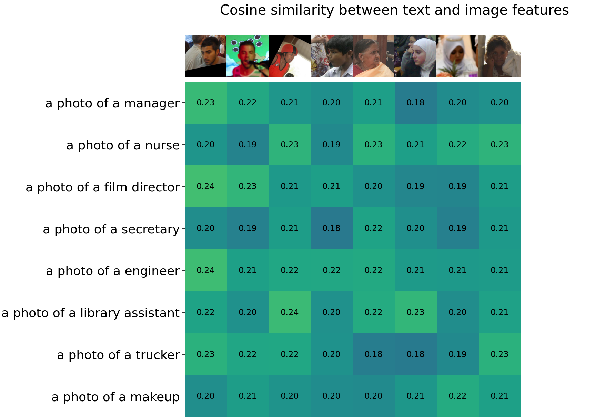 | Models pre-trained on large amounts of image-caption data have demonstrated impressive performance across vision-and-language (VL) tasks. However, societal biases have been serious issues in existing vision or language tasks and careful calibrations are required before deploying models in real-world settings, while only a few recent works have paid attention to the social bias problem in these models. In this work, we first propose a retrieval-based metric to measure gender and racial biases in two representative VL models (CLIP and FIBER). Then, we propose two post-training methods for debiasing VL models: subspace-level transformation and neuron-level manipulation. By identifying model output neurons or subspaces that correspond to the specific bias attributes, based on which we manipulate the model outputs to mitigate these biases. Extensive experimental results on the FairFace and COCO datasets demonstrate that our models can successfully reduce the societal bias in VL models while not hurting the model performance too much. We further perform analyses to show potential applications of our models on downstream tasks, including reversing gender neurons to revise images and mitigating the bias in text-driven image generation models. |
Measuring and Mitigating Bias in Vision-and-Language Models.
Spring 2022, UCLA CS 269 project, advised by Prof. Bolei Zhou, worked with Zi-Yi Dou.
Sampling for Heterogeneous Graph Neural Networks.
#GNNs, #Graph Sampling, #Heterogeneous Graph, #Scalable, #Efficiency
| 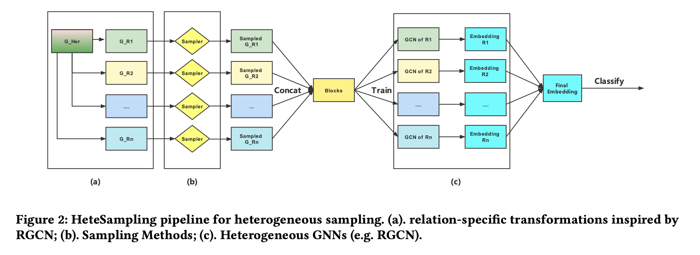 | Graph sampling is a popular technique in training large-scale graph neural networks (GNNs); recent sampling-based methods have demonstrated impressive success for homogeneous graphs. However, in practice, the interaction between different entities is often different based on their relationship, i.e., the network in reality is mostly heterogeneous. But only a few of the recent works have paid attention to sampling methods on heterogeneous graphs. In this work, we aim to study sampling for heterogeneous GNNs. We propose two general pipelines for heterogeneous sampling. Based on the proposed pipeline, we evaluate 3 representative sampling methods on heterogeneous graphs, including node-wise sampling, layer-wise sampling, and subgraph-wise sampling. To the best of our knowledge, we are the first to provide a thorough implementation, evaluation, and discussion of each sampling method on heterogeneous graphs. Extensive experiments compared sampling methods from multiple aspects and highlight their characteristics for each category. Evaluation of scalability on larger-scale heterogeneous graphs also shows we achieve the trade-off between efficiency and effectiveness. Last, we also analyze the limitations of our proposed pipeline on heterogeneous sub-graph sampling and provide a detailed comparison with HGSampling. Our code is available at: https://github.com/Eurus-Holmes/Heterogeneous_Sampling. |
Sampling for Heterogeneous Graph Neural Networks.
Spring 2022, UCLA CS 249 project, advised by Prof. Yizhou Sun, worked with Yongqian Li, Ruoyu He, YuanChing Lin.
Empirical Study of Model Compression and Speed up for Vision Transformer.
#Vision Transformer, #Model Compression, #Fast Training, #Data-Efficient, #Large-Scale ML
| 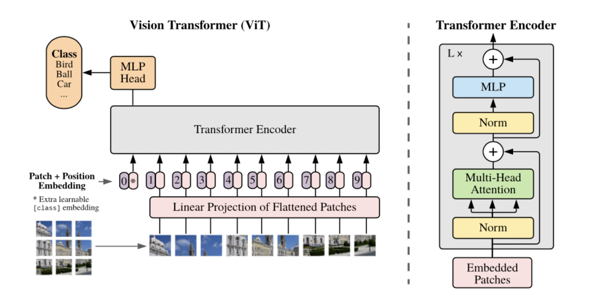 | Vision transformers (ViT) have recently attracted considerable attention and achieved SOTA performance in many computer vision tasks. However, ViT models suffer from excessive computational and memory costs due to stacking multi-head self-attention modules and else. To allow its further application on resource-restricted and low-powered devices, model compression techniques are required to reduce the model size as well as speed up inference with acceptable precision loss. In this work, we study four main types of model compression methods for ViT, including quantization, low-rank approximation, knowledge distillation, and pruning, and make a comprehensive comparative analysis. Furthermore, we also explore combinations of different compression methods to verify whether better performance can be obtained. Extensive experimental results show our methods achieve a decent trade-off between accuracy and computational efficiency. |
Empirical Study of Model Compression and Speed up for Vision Transformer.
Winter 2022, UCLA CS 260 project, advised by Prof. Cho-Jui Hsieh, worked with Tianyi Xie, Yongqian Li, Zhicheng Ren.
DDL: Deep Deformable Learning for Image Segmentation.
#Computer Vision, #Deep Learning, #Deformable Models, #Geometry, #Image Segmentation
| 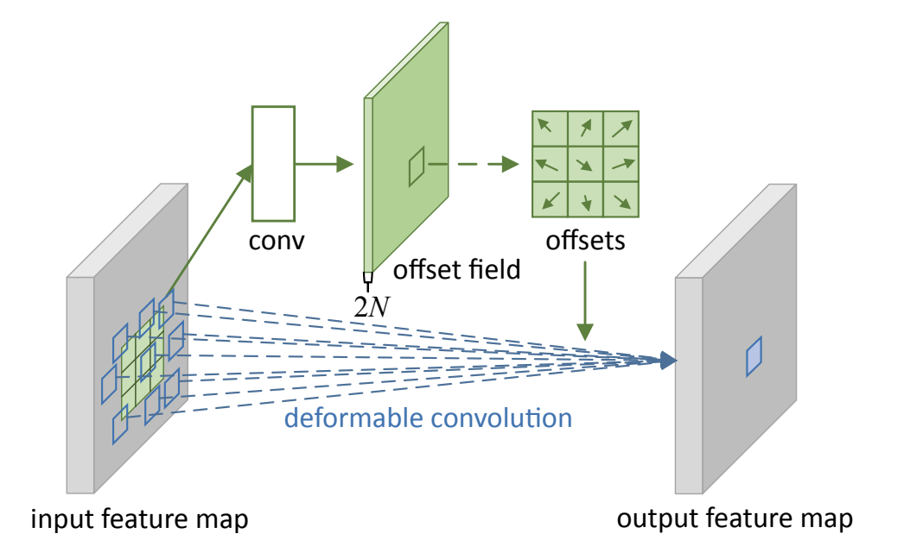 | Image segmentation is a computer vision task of extracting pixel-wise mask segments of objects for an image. While modern Deep Learning-based models have achieved great success in various image segmentation tasks such as scene understanding, medical image analysis, applications for driver-less cars, and more, they can still be improved in terms of sheer performance, model explainability, and computational complexity. In this work, we study the effectiveness of deep learning-based models, deformable models, and finally the combination of the two over various Image Segmentation datasets. We aim to combine the classical geometry and physics-based approach of deformable models with modern large-scale advances in deep learning in order to propose a novel model architecture. We finally perform an empirical analysis of various models on a suite of datasets and metrics to do a comparative case study. |
DDL: Deep Deformable Learning for Image Segmentation.
Fall 2021, UCLA CS 269 project, advised by Prof. Demetri Terzopoulos, worked with Arjun Kallapur, Nischal Chandra, Sanjeev Venkatesan, Tianyi Xie, Vaibhav Kumar.
Tumor2Graph: a novel Overall-Tumor-Profile-derived virtual graph deep learning for predicting tumor typing and subtyping.
#Multimodal, #GNNs, #Graph Embedding, #AI for Healthcare, #Applied Machine Learning
| 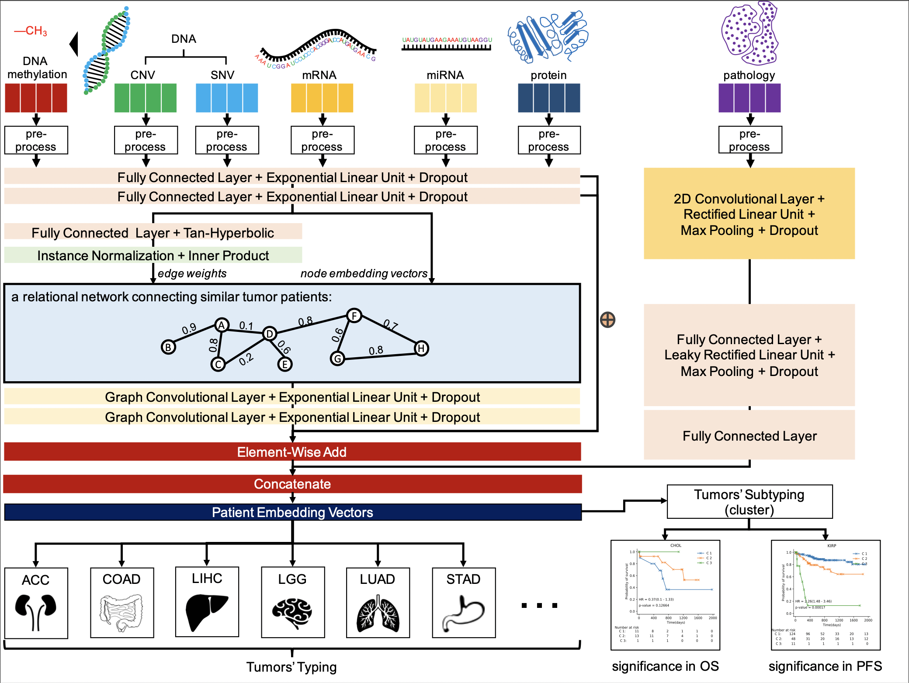 | In this research, we propose a novel multimodal graph framework, namely Tumor2Graph, to jointly model 7 types of biomarkers (including structured data and unstructured data) for predicting tumor typing and subtyping. For the structured data (CNV, SNV (gene mutations), DNA methylation, mRNA (gene expression), miRNA, protein), We use element-wise add to integrate the primary feature embedding vectors in the first and second fully connected layers and the Laplacian smoothing embedding vectors in the graph convolutional layer. For the unstructured data (pathology images), we separate their feature extraction algorithms due to their specificity. We use a neural module including a 2D convectional layer and concatenate the extracted feature embedding vectors with those of the structured data to work as patient embedding vectors. The patient embedding vectors are directly used for supervised learning to classify tumor typing and unsupervised learning to cluster tumor subtyping. |
Tumor2Graph: a novel Overall-Tumor-Profile-derived virtual graph deep learning for predicting tumor typing and subtyping.
SenseTime Internship project, Oct. 2020 – Jul. 2021.
Predicting Antigen-Antibody Interaction via Global and Local Feature Deep Learning based on Primary Amino Acid Sequences.
#GNNs, #Robustness, #Generalization, #AI for Healthcare, #Applied Machine Learning
| 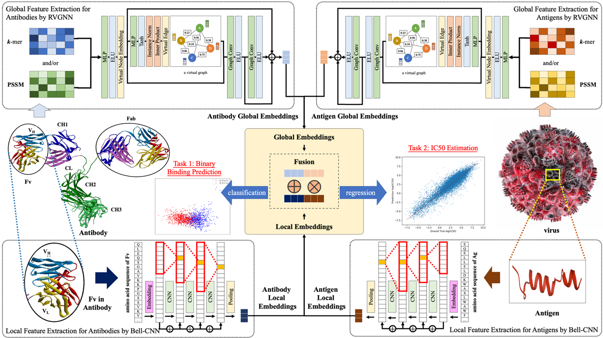 | Antibodies work as potent agents to opsonize and neutralize viruses. Antibodies’ rich variability protects hosts from miscellaneous intruders but poses a challenge for methods of identifying antigen-antibody interactions, especially on new (or unseen) antibodies due to their unknown interactability with antigens. Wet-lab experimental processes (such as phage display) are resource-intensive and time-consuming. Hence, we propose DeepAAI, a deep neural network-based tool. We devise an automatically learned virtual graph to address antibodies’ high variability, which connects seen and unseen antibodies by quantitating functional similarity based on the supervised signals from two downstream tasks, binary neutralization prediction and IC50 estimation. Substantial experiments on our curated dataset, including 29,394 antigen-antibody interactions of human immunodeficiency virus (HIV), prove DeepAAI’s accuracy and robustness. Moreover, we demonstrate DeepAAI’s generalizability on clinical samples, 17 neutralizing and 19 non-neutralizing antibodies of severe acute respiratory syndrome coronavirus 2 (SARS-CoV-2), obtained from our previous study. Hopefully, DeepAAI can provide a rapid and precise approach to assist in laboratory experiments for discovering new antibodies. |
Predicting Antigen-Antibody Interaction via Global and Local Feature Deep Learning based on Primary Amino Acid Sequences.
SenseTime Internship project, Oct. 2020 – Jul. 2021.
BridgeDPI: A Novel Graph Neural Network for Predicting Drug-Protein Interactions.
#GNNs, #Drug Discovery, #DPI, #AI for Healthcare, #Applied Machine Learning
| 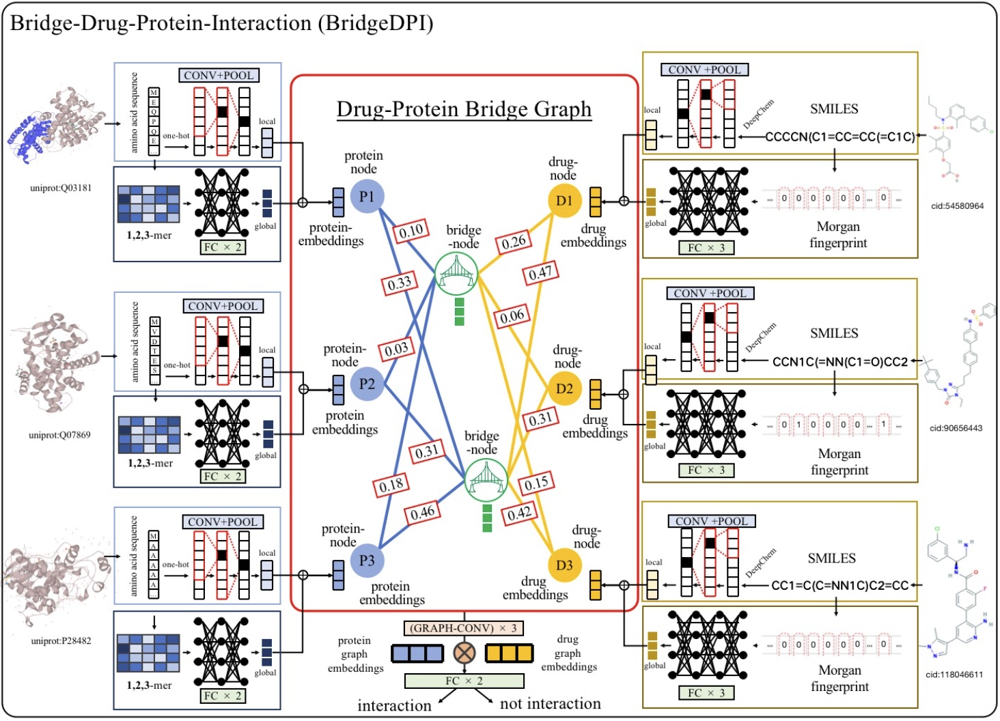 | In this research, we propose a hyper-nodes GNN for bridging drug-protein interactions and applied it to drug discovery, namely BridgeDPI. BridgeDPI introduces a class of nodes named hyper-nodes, which bridge different proteins drugs to work as PPAs and DDAs. The hyper-nodes can be supervised learned for the specific task of DPI since the whole process is end-to-end learning. Consequently, such a model would improve the prediction performance of DPI. In three real-world datasets, we further demonstrate that BridgeDPI outperforms state-of-the-art methods. Moreover, ablation studies verify the effectiveness of the hyper-nodes. Last, in an independent verification, BridgeDPI explores the candidate bindings among COVID-19’s proteins and various antiviral drugs. And the predictive results accord with the statement of the World Health Organization and Food and Drug Administration, showing the validity and reliability of BridgeDPI. |
BridgeDPI: A Novel Graph Neural Network for Predicting Drug-Protein Interactions.
SenseTime Internship project, Oct. 2020 – Jul. 2021.
CHABCNet: Real-time Scene Text Spotting with Adaptive Bezier-Curve Network
#Computer Vision, #Model Compression, #Auto ML, #Multilingual OCR, #Detectron2
#Data Augmentation, #Pre-training, #Robustness, #Generalization, #Applied Machine Learning
| 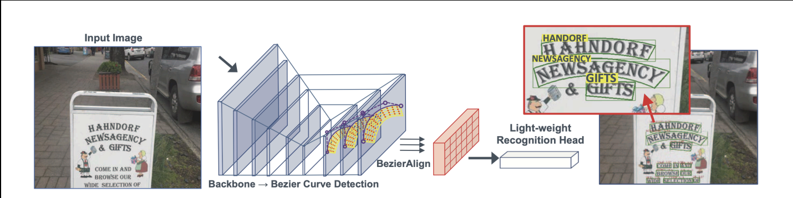 | CHABCNet: Implemented an efficient Chinese scene end-to-end text spotting framework named CHABCNet, made key improvements (including data augmentation, auto ML, model distillation, etc.) based on the English ABCNet (CVPR 2020 Oral) and increased accuracy by 10% in terms of baseline. More importantly, CHABCNet is lightweight (reduced by 40%) and has a faster inference speed (10 times), which can be applied to practical scenarios. Also collaborated with a team of 3 to conduct ICDAR Robust Reading Challenge on Reading Chinese Text on Signboard (ReCTS). Building on Detectron2 (Facebook AI Research), achieved experimental performance equivalent to Top 3 and the speed was more than 10 times faster than baseline methods, met realistic needs. |
| 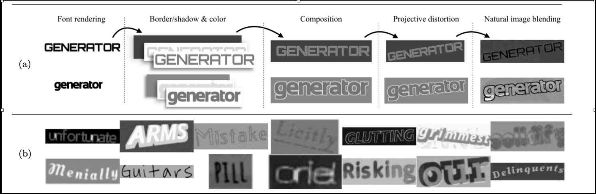 | SynthText_CH: Generated 600k images including Chinese synthetic text, based on Synthetic Data for Text Localisation in Natural Images (CVPR 2016), improved model’s robustness and generalization ability. Sped up multi-GPU parallel training by splitting datasets to store on object storage service (Amazon S3) and pre-downloading onto SSD to save cost of storage by 60%. |
Project Presentation | CHABCNet | SynthText_CH
Apple Internship project (Under NDA), Mar. 2020 - Sep. 2020.
Multimodal Neural Machine Translation
#Multimodal, #NLP, #Computer Vision, #Machine Translation, #Vision-and-Language
| 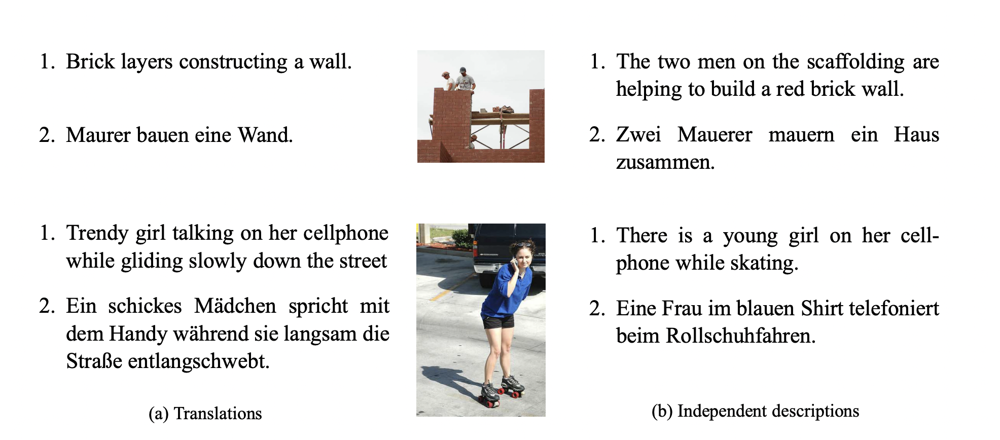 | Multimodal Neural Machine Translation (MNMT) aims to combine information from other modality (such as images) to enhance text-only translation, has attracted wide attention from computer vision and natural language processing communities. For a long time, machine translation has only involved the conversion between texts, but in fact, human perception functions are multimodal. Because humans understand the world not only with text but also with visual and auditory perception capabilities. However, the semantics remains the same in the process of translation, because people have the same cognition of the nature of the objective world, but the “perception method” is different, which is reflected in the grammatical difference in language. Therefore, we can assume that incorporating such “objective world knowledge” (e.g. visual information in image/video-guided translation or audio information in spoken language translation) into the traditional text-only machine translation model can further improve the performance of machine translation, and solve the problem of data sparsity and ambiguity. In this work, we propose a novel representation learning method combined with visual contents and text information to improve the performance of MNMT, which can get dynamic hierarchical visual representation to make visual information better interact with language context. Compared with the experimental results of pure text machine translation on the Multi30k dataset, the BLEU value is increased by 3%. |
Multimodal Neural Machine Translation
Lenovo Internship project, Sep. 2019 - Dec. 2019.
PUB-SalNet: A Pre-trained Unsupervised Self-Aware Backpropagation Network for Biomedical Salient Segmentation.
#Computer Vision, #Unsupervised Learning, #Pre-training, #Image Segmentation, #Object Detection
#Saliency, #Data Augmentation, #Robustness, #Generalization, #AI for Healthcare
| 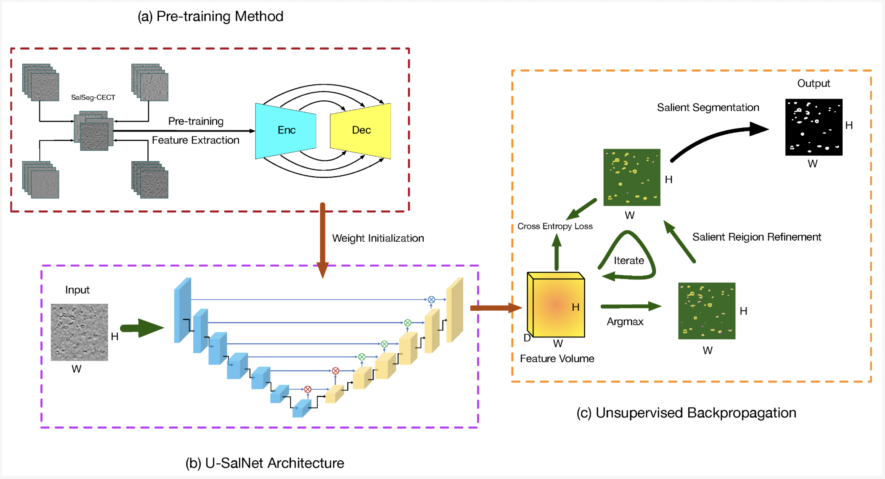 | In this paper, we propose a completely unsupervised self-aware network based on pre-training and attentional backpropagation for biomedical salient segmentation, named as PUB-SalNet. Firstly, we aggregate a new biomedical data set from several simulated Cellular Electron Cryo-Tomography (CECT) data sets featuring rich salient objects, different SNR settings, and various resolutions, which is called SalSeg-CECT. Based on the SalSeg-CECT data set, we then pre-train a model specially designed for biomedical tasks as a backbone module to initialize network parameters. Next, we present a U-SalNet network to learn to selectively attend to salient objects. It includes two types of attention modules to facilitate learning saliency through global contrast and local similarity. Lastly, we jointly refine the salient regions together with feature representations from U-SalNet, with the parameters updated by self-aware attentional backpropagation. We apply PUB-SalNet for analysis of 2D simulated and real images and achieve state-of-the-art performance on simulated biomedical data sets. Furthermore, our proposed PUB-SalNet can be easily extended to 3D images. The experimental results on the 2d and 3d data sets also demonstrate the generalization ability and robustness of our method. |
Papers
PUB-SalNet: A Pre-trained Unsupervised Self-Aware Backpropagation Network for Biomedical Salient Segmentation.
Feiyang Chen*, Ying Jiang*, Xiangrui Zeng and Min Xu. (*equal contribution). Algorithms 2020, 13(5), 126.Is Deep Learning All You Need for Unsupervised Saliency Detection of Biomedical Images?
Feiyang Chen, Ying Jiang, Xiangrui Zeng, and Min Xu. (Manuscript), 2019.A unified framework for packing deformable and non-deformable subcellular structures in crowded cryo-electron tomogram simulation.
Sinuo Liu, Xiaojuan Ban, Xiangrui Zeng, Fengnian Zhao, Yuan Gao, Wenjie Wu, Hongpan Zhang, Feiyang Chen, Thomas Hall, Xin Gao and Min Xu. BMC Bioinformatics 2020.
Complementary Fusion of Multi-Features and Multi-Modalities in Sentiment Analysis.
#Multimodal, #NLP, #Speech and Audio, #Sentiment Analysis, #Feature Fusion
| 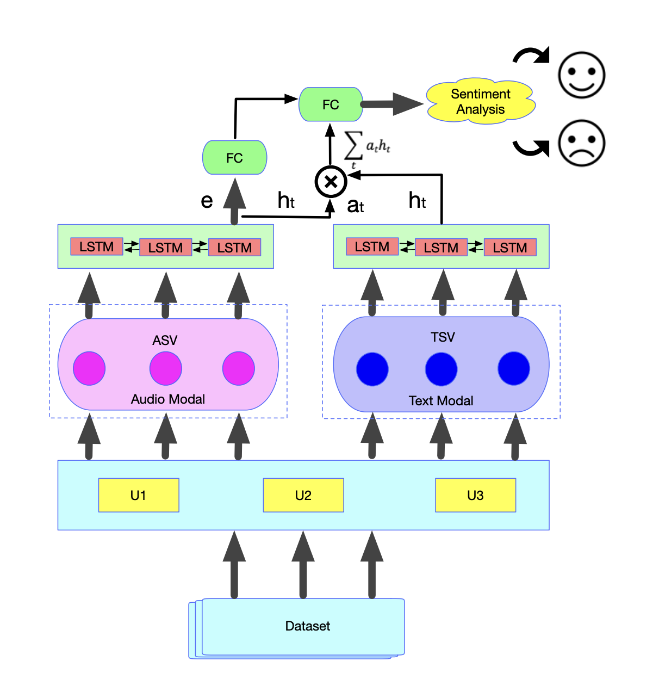 | Sentiment analysis, mostly based on text, has been rapidly developing in the last decade and has attracted widespread attention in both academia and industry. However, the information in the real world usually comes from multiple modalities, such as audio and text. Therefore, in this paper, based on audio and text, we consider the task of multimodal sentiment analysis and propose a novel fusion strategy including both multi-feature fusion and multi-modality fusion to improve the accuracy of audio-text sentiment analysis. We call it the DFF-ATMF (Deep Feature Fusion - Audio and Text Modality Fusion) model, which consists of two parallel branches, the audio modality based branch and the text modality based branch. Its core mechanisms are the fusion of multiple feature vectors and multiple modality attention. Experiments on the CMU-MOSI dataset and the recently released CMU-MOSEI dataset, both collected from YouTube for sentiment analysis, show the very competitive results of our DFF-ATMF model. Furthermore, by virtue of attention weight distribution heatmaps, we also demonstrate the deep features learned by using DFF-ATMF are complementary to each other and robust. Surprisingly, DFF-ATMF also achieves new state-of-the-art results on the IEMOCAP dataset, indicating that the proposed fusion strategy also has a good generalization ability for multimodal emotion recognition. |
Papers
Complementary Fusion of Multi-Features and Multi-Modalities in Sentiment Analysis.
Feiyang Chen, Ziqian Luo, Yanyan Xu and Dengfeng Ke. In Proceedings of the AAAI-20 Workshop on Affective Content Analysis, New York, USA, AAAI.Audio-Text Sentiment Analysis using Deep Robust Complementary Fusion of Multi-Features and Multi-Modalities.
Feiyang Chen, Ziqian Luo. Accepted by NeurIPS 2019 Workshop: NewInML 2019, Vancouver, BC, Canada, NeurIPS.Audio Sentiment Analysis by Heterogeneous Signal Features Learned from Utterance-Based Parallel Neural Network.
Ziqian Luo, Hua Xu and Feiyang Chen. In Proceedings of the AAAI-19 Workshop on Affective Content Analysis, Honolulu, USA, AAAI.
Miscellaneous
I have a super cute girlfriend and we have had a wonderful time for three years (live update).
I love astronomy and stargazing, and the Three-Body is my favorite book. I am also a big fan of Sherlock Holmes. That's where my GitHub avatar and username come from.